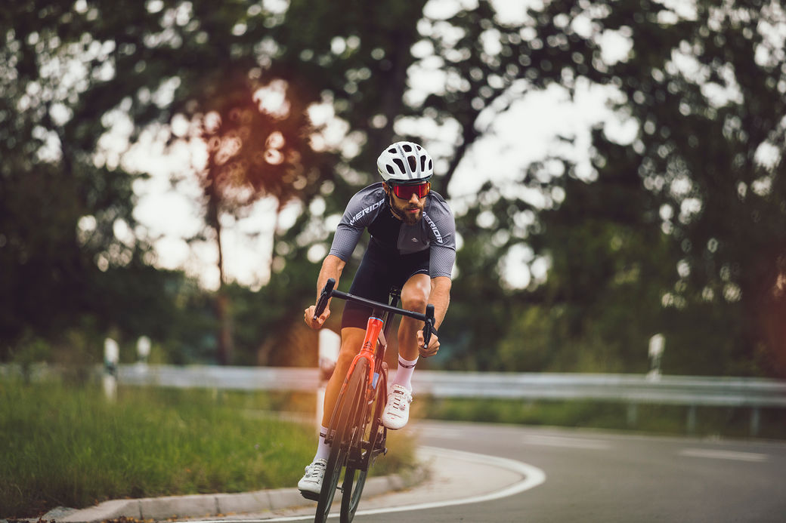

메리다 스컬트라 400 노리는 중..
The perfect marriage of lightweight, endurance enhancing comfort and aerodynamic performance, the new SCULTURA is our most rounded road bike ever. While building on its heritage as our lightweight climbing bike, design details from the test and award-winning REACTO aero bike have broadened its abilities even further. Available in carbon and aluminium and as either disc brake or rim brake option, it combines outstanding comfort with whippet-like acceleration and class-leading climbing pedigree.
